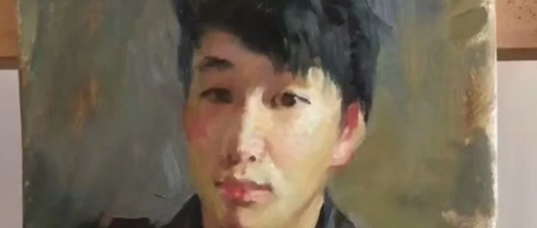

迷茫、彷徨、從容……
不知道說些什麼！
最近這段時間迷茫了，
彷徨了，不知道所錯了……
手術的時間越來越近了，
我應該高興才對啊？
為啥！
老是心事重重，悶悶不樂。
（我努力的工作掙錢，讓自己忘記時間，
讓自己忘記，內心所“想”的事情
但是我做不到，我越不想“它”，“她”越在我的心裡煎熬，揮之不去，
當我把內心的想法，和以後的做法
說出來的那一刻，我解脫了，
所有的壓力給到了，《他》能否釋懷和承受我無法預知）
是夏天的“煩悶”，
夜深人靜的《乏味》
還是
內心的“孤獨”和“寂寞”
彷徨和無奈！
夜深人靜的時候
我無時無刻不在問自己
你想要什麼？
你需要什麼？
你會得到什麼？
什麼“事”你的？
什麼不“世”你的？
我赤身裸體的來到這個世界
（我無法選擇我的父母和環境）
我無法改變父親的想法和思想
我也無法“替”他們選擇……
人“生”
的
《路》
只有
自己
走過才知道
《品味人生》
《無品不閒》
《家家有經難念之》
人生的路改怎麼走？
才不會留有遺憾……